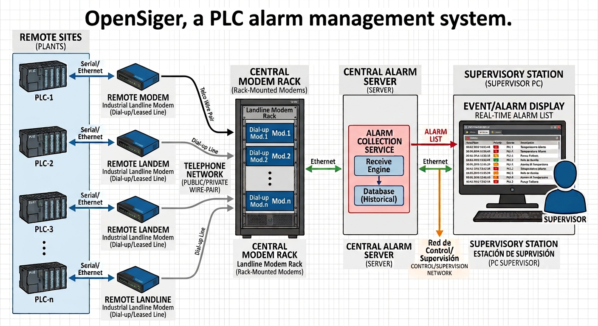

Projects completed
-
 Name: Nginx Proxmox Controller
Category: Virtualization
Description: A bash based system to stop and start Proxmox VE container, depending on if they are accessed or not
Name: Nginx Proxmox Controller
Category: Virtualization
Description: A bash based system to stop and start Proxmox VE container, depending on if they are accessed or not
-
 Name: Installed kubernetes cluster
Category: Container
Description: We used two scripts to install a complete kubernetes cluster
Name: Installed kubernetes cluster
Category: Container
Description: We used two scripts to install a complete kubernetes cluster
- Name: Design and creation of a system to detect and block not trusted PCs in a LAN network Category: Security Description: We created a system that is able to detect and block intruding PCs into the LAN network of an organization
-

Name: OpenSiger, a PLC's supervision system Category: PLC Description: A system that is able show events from remote PLCs